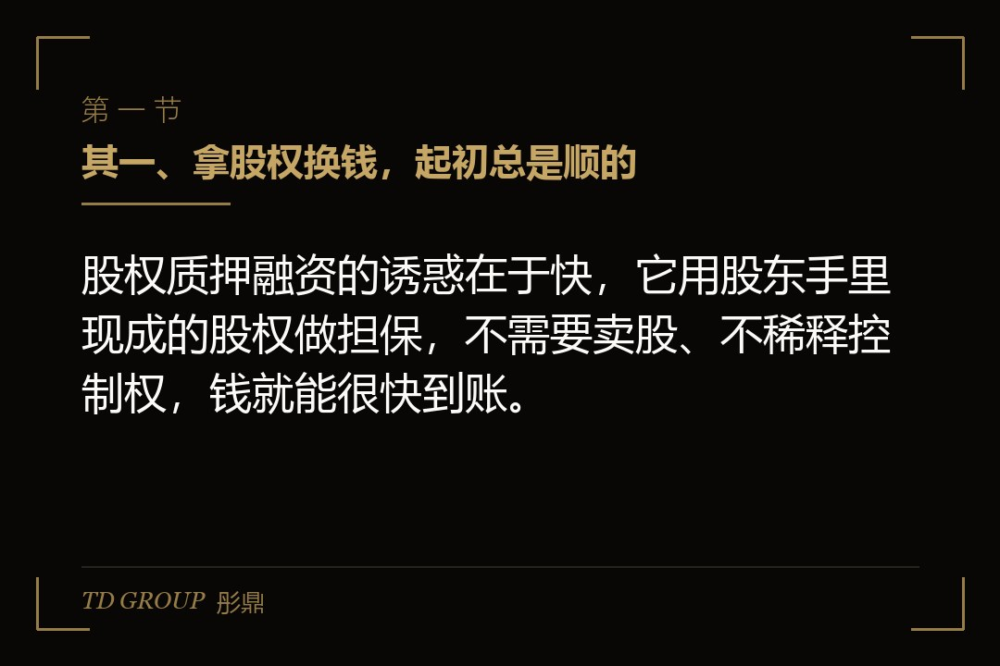
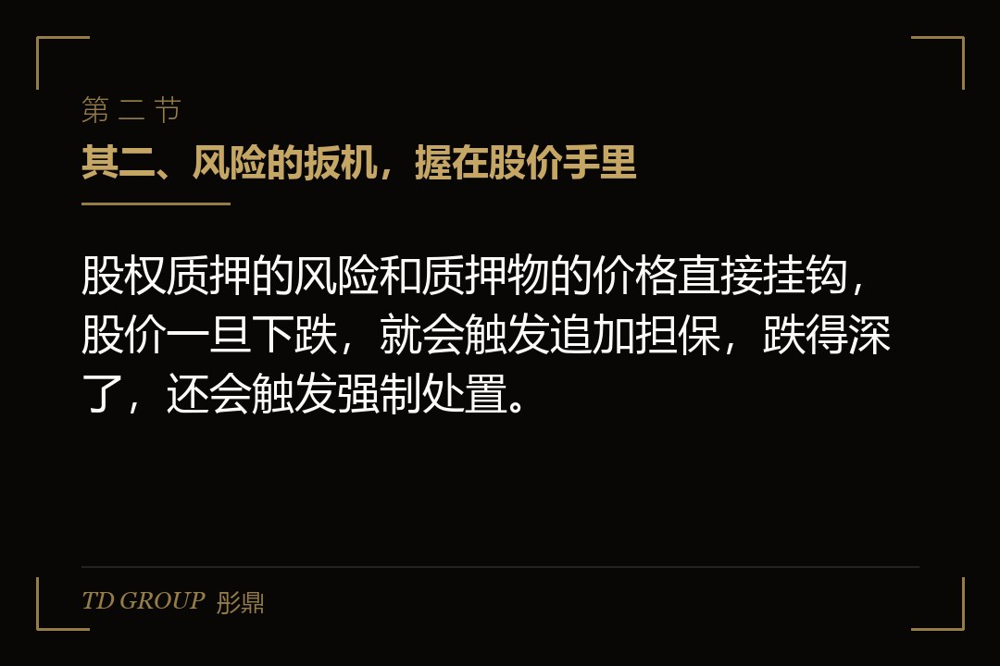
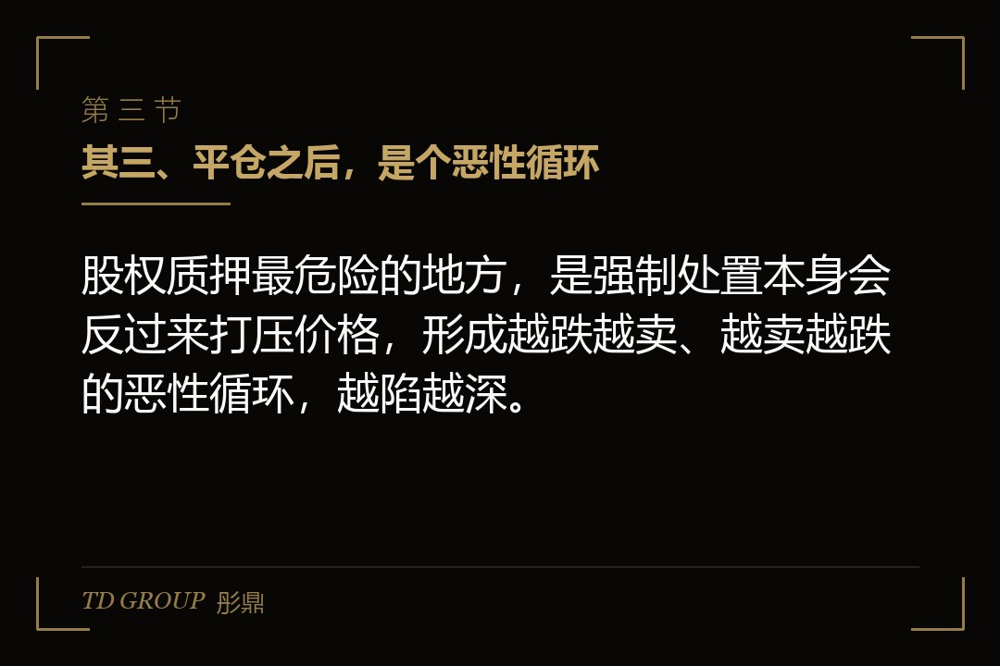

其一、拿股权换钱，起初总是顺的

结论先行：股权质押融资的诱惑在于快，它用股东手里现成的股权做担保，不需要卖股、不稀释控制权，钱就能很快到账。
假设一家公司的老板，看好了一个新项目，需要一笔不小的资金。他不想卖手里的股权——一卖，控制权就可能松动；也不想走太复杂的融资流程——项目等不起。这时候，股权质押是最顺手的办法。
他把名下的一部分股权，质押给银行或券商，作为担保，很快借出一笔钱。股权还在他名下，表决权还在他手里，公司该怎么经营还怎么经营，只是那部分股权被设了一个担保在上面。
这个过程看起来几乎没有什么代价。不用卖股，不用稀释，钱就到手了。也正因为它太顺，很多人在签字的时候，只盯着那笔钱，没去细看那份质押合同里写的警戒线和平仓线。
而股权质押和别的融资最不一样的地方，恰恰就藏在那份合同里。普通贷款，出问题顶多是还不上、上征信、打官司；股权质押出问题，动的是股东对公司的控制根基。钱是流动的，股权是根本的，拿根本去换流动，这个交换的分量，签字前得掂量清楚。
其二、风险的扳机，握在股价手里

结论先行：股权质押的风险和质押物的价格直接挂钩，股价一旦下跌，就会触发追加担保，跌得深了，还会触发强制处置。
股权质押和房子抵押不一样的地方在于，房子的价格相对稳定，股权的价格每天在动。银行放款的时候，会按股权市值打一个折扣，这个折扣就是质押率。比如市值一个亿的股权，按四折质押，只能借出四千万。
这个折扣，就是银行给自己留的安全垫。但安全垫是有限的。如果股价下跌，质押的股权市值缩水，跌破了一定的警戒线，银行就会要求股东补仓——要么补钱，要么补更多的股权。如果继续下跌、跌破平仓线，银行就有权把质押的股权拿去处置，用来还钱。
可以把这个折扣想象成一道缓冲墙。股价小跌，墙还挡得住，不用惊动谁；跌到墙根了，银行就会敲你的门要补；一旦墙被击穿，银行就不跟你商量了，直接处置。墙的厚薄，取决于当初质押率谈得有多低；谈得越低，墙越厚，你留给自己的反应时间就越长。
也就是说，签质押合同的那一刻，风险的扳机就交到了股价手里。股价涨，一切太平；股价跌，压力一层层压过来。而股价涨不涨，很多时候根本不是股东能控制的。
其三、平仓之后，是个恶性循环

结论先行：股权质押最危险的地方，是强制处置本身会反过来打压价格，形成越跌越卖、越卖越跌的恶性循环，越陷越深。
当质押的股权被强制平仓，资金方要在市场上把这些股权卖掉。大量的股权被抛向市场，供给一多，股价自然被往下压。股价一跌，可能又触发别的质押、别的股东的平仓线，于是更多的股权被抛出来。
这就是股权质押最典型的连锁反应。一个股东质押平仓，可能拖累整个公司的股价；公司股价一跌，其他质押的股东也跟着危险；最后可能演变成整个公司层面的流动性危机。
这种连锁之所以可怕，是因为它是自我强化的。市场上没有人会去区分「是这家公司出了问题，还是某个股东自己的质押爆了」，看到抛压就跟着卖。卖的人越多，价格越往下，越往下，越多的质押线被击穿。一个本来是股东个人层面的融资决定，就这样把整个公司的价格和信心一起拖下了水。
对一家上市公司来说，这种连锁尤其危险。股价是公开的，平仓是公开的，市场看到有股东被平仓，会本能地怀疑公司是不是出了问题，于是抛售加剧，股价进一步下探。一个本来是个人融资的事情，就这样传染到了整个公司。
所以聪明的股东，在质押之前就会把这条连锁想透：他质押出去的，不只是那部分股权的收益权，还有市场对公司的信心。信心这东西最脆弱，一旦出现一次平仓的公开信号，想再买回来，代价远比当初借到的那点钱要高得多。
其四、非上市公司，风险藏在估值里
结论先行：非上市公司的股权质押，没有公开的股价，风险不在每天的价格波动里，而藏在当初怎么给股权估值、以及处置时谁来接手上。
非上市公司的股权没有市场价格，质押的时候，双方要谈一个估值。这个估值往往是谈出来的、是拍出来的，可能偏高。估得越高，能借的钱越多，但一旦出问题，处置的时候才发现，这个估值根本没人接。
更麻烦的是流动性。上市公司股权处置起来，市场上一卖就有人买；非上市公司股权要处置，得找一个愿意接手的买家，而这个买家可能根本不存在。资金方拿着一个处置不掉的股权，钱收不回来，就会把压力转回到股东身上。
再往深一层想，非上市公司的股权质押，连「警戒线」都很难划得准。因为没有公开价格，质押的时候靠的是那次谈出来的估值，而这个估值一旦事后被证明偏高，等于从一开始，那道安全垫就是虚的。股东拿到手的钱是按虚高的估值算的，将来要补的缺口，却是按真实的价值算的，中间的落差，都要自己扛。
所以非上市公司的股权质押，看着没有股价波动的风险，其实风险一点不小，只是换了种形式，藏在估值虚高和无人接盘这两件事里。
其五、还有几笔隐形的账
结论先行：股权质押融资除了显性的利息和质押率，还有几笔隐形账——期限错配、交叉违约、以及控制权旁落的可能，签之前都要想清楚。
其一是期限错配。质押融资借来的钱，往往期限不长，而股东投出去的项目，回收周期却很长。钱到期了，项目还没产出，就得续贷或者再找钱，一旦续不上，就出问题。
这其实是最常见、也最容易被忽略的一个坑。股东融资时图的是快，项目回收却要几年，中间这个时间差，全靠一次次的续贷去填。续贷看的是行情和信用，行情一差、信用一动，续不上就是一夜之间的事。把短期借来的钱，压进一个长期的项目里，本质上是拿流动性去赌时间。
其二是交叉违约。有些质押合同里，会约定股东或者公司的其他债务一旦违约，这笔质押也跟着触发。也就是说，本来这笔质押没事，公司另一笔债出了问题，连带把质押也拖下水。
其三是控制权旁落。质押本身不动控制权，但一旦触发平仓、股权被处置，那部分股权就真的换了主人。如果质押出去的比例足够大，一次平仓就可能让股东失去公司的控制权。
这三笔账都不写在利息那一行，但每一笔都能在某个时点，把一个看似稳妥的融资安排，变成一场控制权危机。
其六、动手之前，守住四条底线
结论先行：要用股权质押，先把质押率、警戒线、资金用途、应急预案这四条底线一条一条守住，比借到多少钱更重要。
其一，守住质押率。别为了多借钱把质押率顶到极限，质押率越高，安全垫越薄，股价一波动就危险。留足缓冲，比多借那一点钱重要得多。
其二，守住警戒线。清楚自己的警戒线和平仓线在哪、离触发还有多远，提前知道价格跌到什么位置会出问题，而不是等收到补仓通知才慌。
其三，守住资金用途。质押借来的钱，投到哪去、什么时候能回本，要能算得清。投一个回收周期和贷款期限严重错配的项目，等于自己给自己埋雷。
其四，守住应急预案。如果价格真跌了、补仓通知真来了，拿什么补、要不要提前处置、怎么保住控制权，提前想好预案，而不是等危机爆发了再被动应对。
这四条底线守住了，股权质押才是股东手里一个灵活的融资工具；守不住，它就是一把把控制权押在股价波动上的铡刀。
本文为知识梳理，不构成专业意见。具体的质押率、警戒线、平仓线与处置安排，以双方正式协议为准，建议由财务顾问与律师共同核过之后再签。